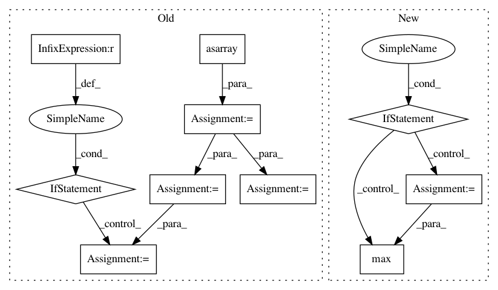

5e3cd5a9f1dfc0e320d3ff5a384505bf06904365,nilearn/plotting/displays.py,BaseSlicer,_map_show,#BaseSlicer#Any#Any#,423
Before Change
// Everything is masked
vmin = vmax = 0
else:
masked_map = np.asarray(data)[not_mask]
vmin = masked_map.min()
vmax = masked_map.max()
if kwargs.get("vmin") is None:
kwargs["vmin"] = vmin
if kwargs.get("vmax") is None:
kwargs["vmax"] = vmax
else:
if not "vmin" in kwargs:
kwargs["vmin"] = data.min()
if not "vmax" in kwargs:
After Change
data_2d_list.append(data_2d)
if kwargs.get("vmin") is None or kwargs.get("vmax") is None:
if "vmin" not in kwargs:
kwargs["vmin"] = max(d.min() for d in data_2d_list
if d is not None)
if "vmax" not in kwargs:
kwargs["vmax"] = max(d.max() for d in data_2d_list
if d is not None)
In pattern: SUPERPATTERN
Frequency: 3
Non-data size: 10
Instances
Project Name: nilearn/nilearn
Commit Name: 5e3cd5a9f1dfc0e320d3ff5a384505bf06904365
Time: 2014-12-04
Author: loic.esteve@ymail.com
File Name: nilearn/plotting/displays.py
Class Name: BaseSlicer
Method Name: _map_show
Project Name: explosion/thinc
Commit Name: ff0d04f231cc8cd912a99982269dca0c41a68316
Time: 2018-03-14
Author: honnibal+gh@gmail.com
File Name: thinc/neural/_classes/batchnorm.py
Class Name: BatchNorm
Method Name: begin_update
Project Name: explosion/thinc
Commit Name: 3611452afac53b53f3e41ee83d7fc7bd811ffb81
Time: 2018-03-14
Author: honnibal+gh@gmail.com
File Name: thinc/neural/_classes/batchnorm.py
Class Name: BatchNorm
Method Name: begin_update